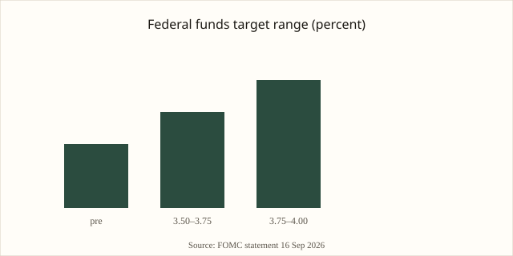

Washington · monetary policy · 16–17 September 2026
The Federal Open Market Committee raised the federal funds target range by 25 basis points to 3.75–4.00 percent.

images/fed-hero.svg.
What is agreed across desks
On 16 September 2026 the Federal Open Market Committee voted 12–0 to raise the target range for the federal funds rate by one-quarter percentage point, to 3¾ to 4 percent. The decision is the first increase since July 2023. An accompanying implementation note set the interest rate on reserve balances at 3.90 percent and the primary credit rate at 4.0 percent, both effective 17 September 2026. The statement released at 14:00 ET described economic activity as expanding at a solid pace, domestic spending as resilient, productivity growth as strong, and capital investment as robust. Job gains had kept pace with the workforce and the unemployment rate had changed little. Inflation, the statement said, remains elevated; the action would support a timelier return to the Committee’s 2 percent goal.
The Summary of Economic Projections showed that 16 of the 18 policymakers who submitted rate projections expected at least one further quarter-point increase by the end of 2026. Median projections placed the year-end 2026 federal funds rate higher than the June median. Chair Kevin Warsh, in the post-meeting press conference, described the hike as the right decision and pointed to persistently above-target inflation together with recent signs of a strengthening economy. President Trump publicly restated his preference for lower rates but did not criticize Warsh by name in the immediate reaction reported by major wires.
Primary documents are the FOMC statement and implementation note on federalreserve.gov. Wire accounts from Reuters, AP, and others match the numerical range, the unanimous vote, and the language of the statement. Market reaction on 16 September included a sharp move in short-term Treasury yields and a decline in major equity indexes after the statement and press conference.
What is only a quote
Any characterization of the decision as “defying” the President is editorial framing, not a fact about the vote. Warsh’s personal assessment that inflation trends have shown little improvement is a judgment offered in the press conference; it is not an independent statistical release. Forward guidance is limited: the Committee did not commit to a specific path beyond the projections that individual participants submitted. Claims that energy prices from the Iran conflict are the sole driver of the inflation figures remain interpretive; the statement itself dropped earlier references that attributed elevated inflation largely to one-off supply shocks.
Mechanism a reader needs
The federal funds rate is the interest rate banks charge one another for overnight reserves. The FOMC sets a target range; the Desk at the New York Fed conducts open-market operations and administers standing facilities to keep the effective rate inside that range. Raising the range raises the opportunity cost of lending and, with lags, can slow demand for credit-sensitive spending. The dual mandate requires the Committee to pursue both maximum employment and price stability. When inflation has run above 2 percent for an extended period, the conventional response is to tighten until the projected path of inflation returns to target in a timely way.
Kevin Warsh became Chair earlier in 2026. The September meeting was his first major policy action of this kind. Unanimity among the 12 voters reduces the chance that the decision will be read as a narrow majority; it does not eliminate disagreement about the size or timing of future moves, which is visible in the dispersion of the dot plot. The next scheduled meetings are in October and December 2026; either can be used for a further adjustment if the incoming data and the Committee’s forecasts support it.
Inflation measured by the personal consumption expenditures price index remains the Committee’s preferred gauge. Officials marked up near-term inflation forecasts relative to June. Energy prices linked to the conflict with Iran have been one public factor; the statement itself does not isolate a single cause. Domestic demand resilience and strong capital investment appear in the statement as positive for activity and, potentially, for price pressure if capacity is constrained.
What this story is not
It is not a completed inflation forecast. It is not a finding that the midterm election calendar determined the vote. It is not a guarantee of a second hike; it is a set of individual projections, most of which include one. The photograph above is a location still of the Eccles Building; it is not a picture of the meeting room or of any individual official.

Source articles and scores
| Outlet | Headline | T | N | C |
|---|---|---|---|---|
| Federal Reserve | Federal Reserve issues FOMC statement | 100 | 0 | 100 |
| Federal Reserve | Implementation Note issued September 16, 2026 | 100 | 0 | 100 |
| Reuters | Fed raises rates in search of 'timelier' drop in inflation, sees more tightening ahead | 96 | 0 | 100 |
| AP | Federal Reserve hikes key rate for 1st time in 3 years, defying Trump demands for a cut | 93 | +5 | 95 |
| Reuters | Morning Bid: A timely hike | 94 | 0 | 98 |
Images: Wikimedia Commons location still of the Eccles Building via Special:FilePath; chart is an original local SVG. Captions state type/location versus event. No crossorigin. onerror points to committed SVGs under images/.